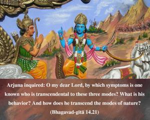

Arjuna inquired: O my dear Lord, by which symptoms is one known who is transcendental to these three modes? What is his behavior? And how does he transcend the modes of nature?

In this verse, Arjuna’s questions are very appropriate. He wants to know the symptoms of a person who has already transcended the material modes. He first inquires of the symptoms of such a transcendental person. How can one understand that he has already transcended the influence of the modes of material nature? The second question asks how he lives and what his activities are. Are they regulated or nonregulated? Then Arjuna inquires of the means by which he can attain the transcendental nature. That is very important. Unless one knows the direct means by which one can be situated always transcendentally, there is no possibility of showing the symptoms. So all these questions put by Arjuna are very important, and the Lord answers them.